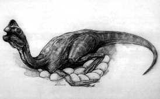

Hompejgji i Arbërit
Zbulohen 61 vezë të fosilizuara dinosauari
DINOARBI
Dinosauret të cilet nuk i keni parë
61 vezë të fosilizuar dinosauri janë zbuluar kohët e fundit në malin Qinglong të distriktit Yunxia, të qytetit Shikan në provincën Hubie. Sipas disa ekspertëve ,ky është, zbulimi më i madh në planet të vezëve të fosilizuar të dinosaurëve. Në malin Qinglong ndodhen të shpërndara më se 2000 vezë dinosauri në gjendje fosile në një sipërfaqe prej 4,2 km katrorë, konfirmuan gjeologë pas disa eksplorimeve. Në vitin 1995, u zbuluan 25 vezë, më 1999, 36 vezë dhe 61 vezë u zbuluan vetëm pak ditë më parë, pak metra nga vendi ku u bë zbulimi i dytë. Aktualisht janë marrë masa për të mbrojtur këto vezë të fosilizuar. Në vitin 1997, në fshatin Lijiagou, 55 km larg këtij mali, u gjetën tre fosile dinosauri me këmbë zogu që i përkasin një periudhe para 70 milionë vjetësh.
Prodhuar më;
1 janar 2003
Kontakto me mua në e-mailin tim:
kapreboys6@hotmail.com